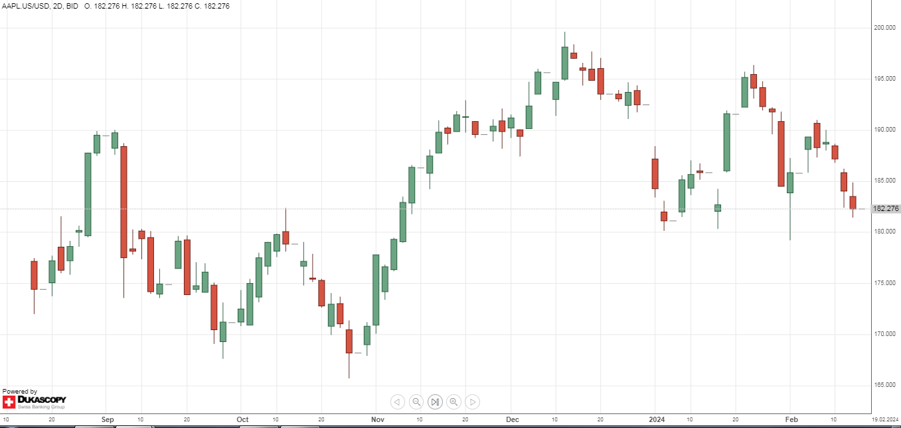
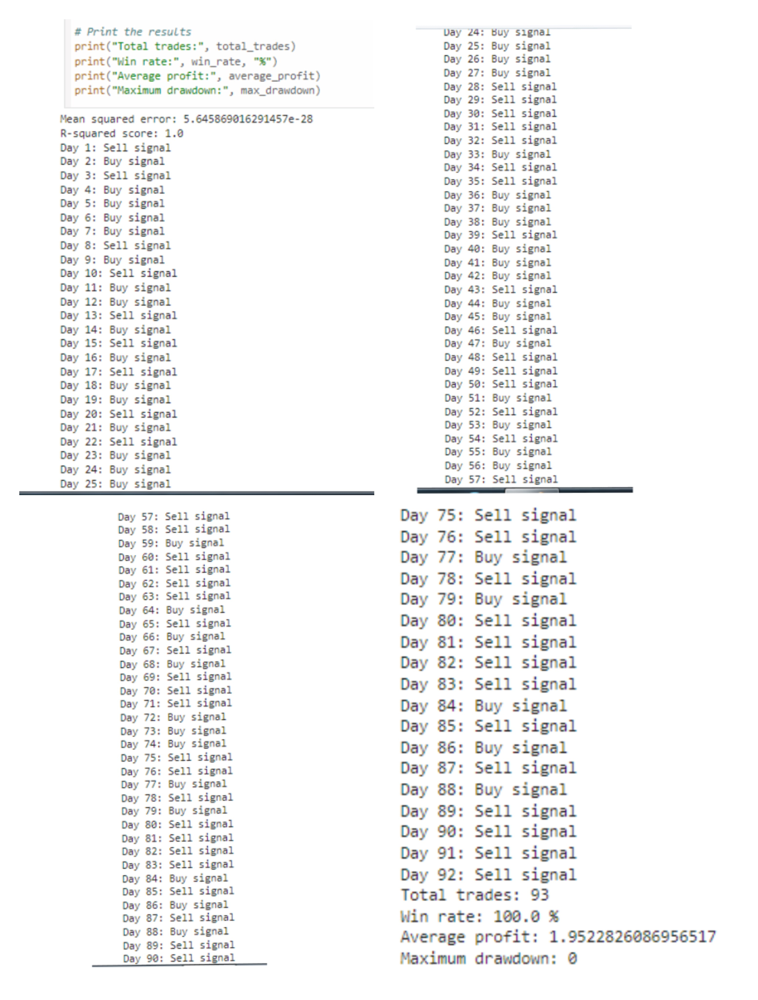
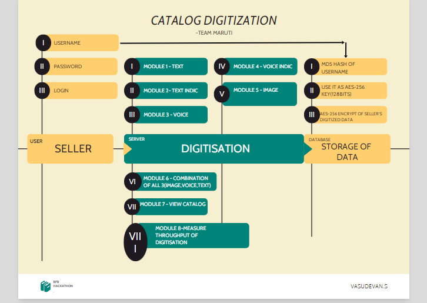
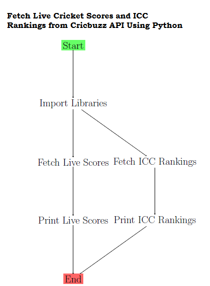
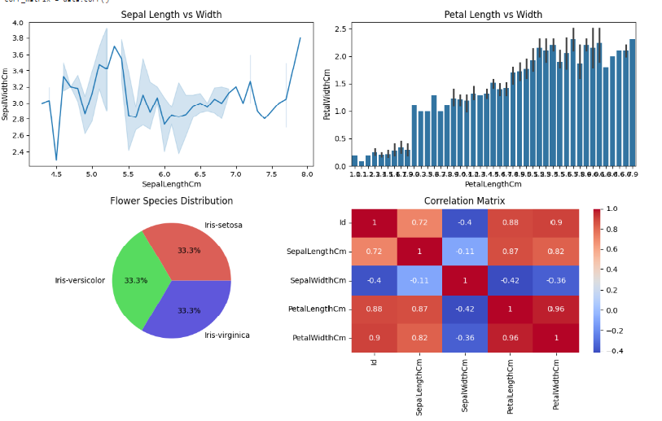

This is a portfolio of my projects made in python.
I am a software engineer with 2+ years of hand-on experience in building and deploying python applications. I am passionate about creating user-friendly and efficient software.
This project utilizes machine learning techniques in Python to predict stock prices and implement a basic trading strategy. Achieved an average profit of 1.95 per trade over six months and accurately predicting buy and sell signals for the subsequent 93 days, demonstrating the effectiveness of the implemented trading strategy.
The final result of the Stock Price Prediction and Trading Strategy using Machine Learning with Python has been displayed below ,
The project has been published as a technical report in Open Science Framework.
Developed a catalog digitization solution using Python 2.7 that supports multiple input formats including text, voice, image, text in Indic languages, voice in Indic languages, and combinations of all three using gtts and pytesseract libraries. Achieved a throughput of 32400 items per hour in Text mode.
The results of the eight test cases has been attached below in the form of a collage,

This Python script utilizes the Cricket API to fetch live cricket scores, match updates, and ICC rankings. It provides a comprehensive solution for cricket enthusiasts seeking real-time information about ongoing matches and top 15 player standings.
To view the complete image ,see the file "api5.png"
The workflow diagram displayed below demonstrates how to Fetch Live Cricket Scores and ICC Rankings from Cricket API Using Python.
This project analyzed the Iris dataset which is a classic dataset used in machine learning and statistics. It consists of 150 samples of three different species of Iris flowers: Setosa, Versicolor, and Virginica. Each sample has four features: sepal length, sepal width, petal length, and petal width. Here, we have demonstrated the development of a data analysis dashboard using Python libraries such as Pandas, NumPy, Matplotlib, and Seaborn. The dashboard provides various visualizations to analyze and understand the data effectively.
The final output of the python dashboard using pandas,numpy,matplotlib and seaborn has been displayed below ,
This project aims to scrape data from the Cricbuzz website, specifically match details, team details, score, result, and commentary for live matches. It also selects a particular team to view the results indiviually and removes a particular team from the result. The extracted data is then printed to the console.
The script will print the extracted data for each live match to the console. The output will be similar to the following:
For Filter match option

For Select match option

Spearheaded the creation of a novel login interface for a book chapter in the Springer International Publishing book "Homomorphic Encryption for Financial Cryptography", enabling users to upload images as passwords using Python, thereby increasing security and usability.
If you have any questions, please feel free to contact me at vasudevanswornampillai@gmail.com.